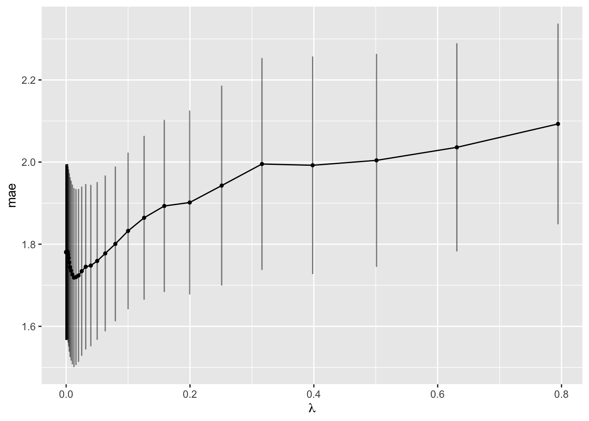
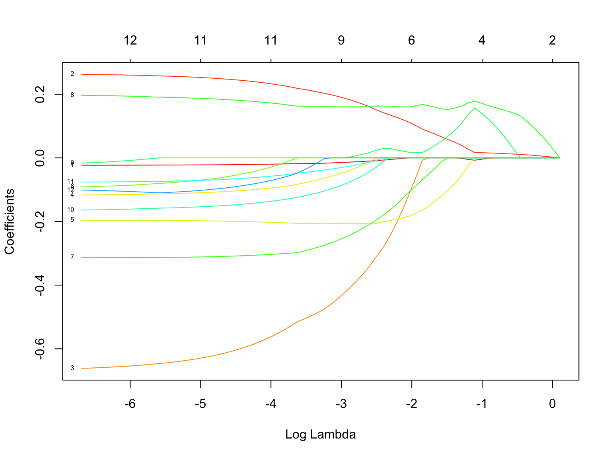
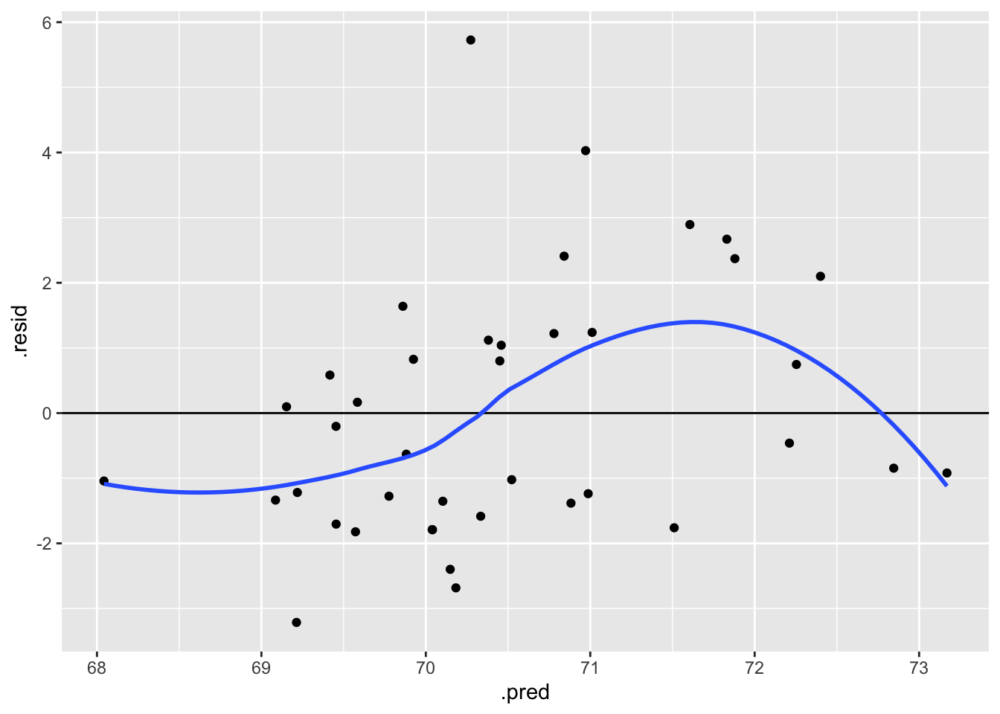

LASSO: Shrinkage / Regularization
Announcements
- See the #announcements channel on Slack for upcoming events.
- Check out this Minnesota Public Radio (MPR) interview on Can AI replace your doctor?! It’s a discussion of AI / machine learning in medicine. NOTE: ML is a subset of AI. (image from Wiki)

- Now that we’re on MPR, journalist David Montgomery used R for data analysis and visualizations using this custom ggtheme to make visuals for MPR. To create a custom ggtheme, check out https://themockup.blog/posts/2020-12-26-creating-and-using-custom-ggplot2-themes/.
- Interested in the intersection between statistics/data science and journalism? Consider applying for this internship with the Star Tribune! (Deadline: Friday, November 1)
Context

world = supervised learning
We want to model some output variable \(y\) using a set of potential predictors (\(x_1, x_2, ..., x_p\)).task = regression
\(y\) is quantitativemodel = linear regression
We’ll assume that the relationship between \(y\) and (\(x_1, x_2, ..., x_p\)) can be represented by\[y = \beta_0 + \beta_1 x_1 + \beta_2 x_2 + ... + \beta_p x_p + \varepsilon\]
estimation algorithm = LASSO (instead of least squares)
Questions
We’ll use the LASSO algorithm to help us build a good predictive model of height using the collection of 12 possible predictors in the humans dataset:
Let’s implement the LASSO. We’ll pause to examine the code. The R code notes section, below, and R code tutorial provide more detail, so no need to take notes here.
# STEP 4: Estimate 50 LASSO models using
# lambda values on a "grid" or range from 10^(-5) to 10^(-0.1).
# Calculate the CV MAE for each of the 50 models.
# NOTE: we use tune_grid instead of fit_resamples to run CV
# NOTE: I usually start with a range from 10^(-5) to 10^1 and tweak through trial-and-error.
set.seed(253)
lasso_models <- lasso_workflow %>%
tune_grid(
grid = grid_regular(penalty(range = c(-5, -0.1)), levels = 50),
resamples = vfold_cv(humans, v = 10),
metrics = metric_set(mae)
)- Examining the impact of \(\lambda\)
Let’s compare the CV MAEs (y-axis) for our 50 LASSO models which used 50 different \(\lambda\) values (x-axis):
- We told R to use a range of \(\lambda\) from -5 to -0.1 on the log10 scale. Calculate this range on the non-log scale and confirm that it matches the x-axis.
- Explain why this plot displays the “Goldilocks” problem of tuning \(\lambda\).
Solution
- Yep it matches.
- CV MAE is large when \(\lambda\) is either too small or too big.
- Picking a \(\lambda\) value
- In the plot above, roughly which value of the \(\lambda\) penalty parameter produces the smallest CV MAE? Check your approximation:
- Suppose we prefer a parsimonious model. The plot below adds error bars to the CV MAE estimates of prediction error (+/- one standard error). Any model with a CV MAE that falls within another model’s error bars is not significantly better or worse at prediction:
# with error bars
# NOTE: we start with the same code as above (lines 1--3),
# then add error bars (`geom_errorbar`)
autoplot(lasso_models) +
scale_x_continuous() +
xlab(expression(lambda)) +
geom_errorbar(data = collect_metrics(lasso_models),
aes(x = penalty, ymin = mean - std_err, ymax = mean + std_err),
alpha = 0.5)Use this to approximate the largest \(\lambda\), thus the most simple LASSO model, that produces a CV MAE that’s within 1 standard error of the best model (thus is not significantly worse). Check your approximation:
- Moving forward, we’ll use the parsimonious LASSO model. Simply report the tuning parameter \(\lambda\) here. Just as a radio show needs to tell its audience where to tune the radio dial, it’s important to explicitly report \(\lambda\) so that we and others can reproduce the model!
Solution
- \(\lambda\) close to 0
# A tibble: 1 × 2
penalty .config
<dbl> <chr>
1 0.0126 Preprocessor1_Model32- \(\lambda\) around 0.2
# With error bars
autoplot(lasso_models) +
scale_x_continuous() +
xlab(expression(lambda)) +
geom_errorbar(data = collect_metrics(lasso_models),
aes(x = penalty, ymin = mean - std_err, ymax = mean + std_err),
alpha = 0.5)
parsimonious_penalty <- lasso_models %>%
select_by_one_std_err(metric = "mae", desc(penalty))
parsimonious_penalty# A tibble: 1 × 2
penalty .config
<dbl> <chr>
1 0.200 Preprocessor1_Model44- 0.2
PAUSE: Picking a range to try for \(\lambda\)
The range of values we tried for \(\lambda\) had the following nice properties. If it didn’t, we should adjust our range (make it narrower or wider).
Our range was wide enough.
We observed the goldilocks effect. Further, the “best” and “parsimonious” \(\lambda\) values were not at the edges of the range, suggesting there aren’t better \(\lambda\) values outside our range.Our range was narrow enough.
We didn’t observe any loooooong flat lines in CV MAE, thus we narrowed in on the \(\lambda\) values where the “action is happening”, i.e. where changing \(\lambda\) impacts the model.
- Finalizing our LASSO model
Let’s finalize our parsimonious LASSO model:
How many and which predictors were kept in this model?
How do these compare to the 5-predictor model we identify using the backward stepwise selection algorithm with this subset of data: weight, abdomen, thigh, neck, chest
Through shrinkage, the LASSO coefficients lose some contextual meaning, so we typically shouldn’t interpret them. Why don’t we care?! THINK: What is the goal of LASSO modeling?
The LASSO
tidy()summary doesn’t report p-values for testing the “significance” of our predictors. Why don’t we care? (Name two reasons.)
Solution
final_lasso <- lasso_workflow %>%
finalize_workflow(parameters = parsimonious_penalty) %>%
fit(data = humans)
final_lasso %>%
tidy() %>%
filter(estimate != 0)# A tibble: 6 × 3
term estimate penalty
<chr> <dbl> <dbl>
1 (Intercept) 63.8 0.200
2 weight 0.0696 0.200
3 abdomen -0.126 0.200
4 thigh -0.0199 0.200
5 knee 0.156 0.200
6 ankle 0.0474 0.2005: weight, abdomen, thigh, knee, ankle
3 of the predictors are the same. LASSO includes knee (which is the most highly correlated with height in this dataset)
age abdomen forearm thigh neck chest wrist
-0.1469746 0.1120756 0.1303829 0.2059575 0.2382709 0.2399610 0.2451834
biceps hip ankle weight knee height
0.3173460 0.3470352 0.3628819 0.4440995 0.4441473 1.0000000 We’re using this model to give good predictions, not to explore / make inferences about relationships.
The remaining predictors are those that have significant predictive power in this linear regression model (thus we get conclusions like a hypothesis test without doing a test). Also, our goal is to build a good predictive model, not to do inference.
- LASSO vs LASSO
- Our parsimonious LASSO selected only 5 of the 12 possible predictors. Out of curiosity, how many predictors would have remained if we had used the
best_penaltyvalue for \(\lambda\)?
- Based on this example, do you think LASSO is a greedy algorithm? Are you “stuck” with your past locally optimal choices? Compare the predictors in this larger model with those in the smaller, parsimonious model.
Solution
- This would have 11 predictors.
lasso_workflow %>%
finalize_workflow(parameters = best_penalty) %>%
fit(data = humans) %>%
tidy() %>%
filter(estimate != 0)# A tibble: 12 × 3
term estimate penalty
<chr> <dbl> <dbl>
1 (Intercept) 104. 0.0126
2 age -0.0208 0.0126
3 weight 0.243 0.0126
4 neck -0.595 0.0126
5 chest -0.102 0.0126
6 abdomen -0.200 0.0126
7 hip -0.0491 0.0126
8 thigh -0.307 0.0126
9 knee 0.180 0.0126
10 biceps -0.145 0.0126
11 forearm -0.0640 0.0126
12 wrist -0.0864 0.0126- ankle is not in this larger model but it is in the more parsimonious model. Therefore, the algorithm can’t be greedy. If it were greedy, then ankle would get removed for all smaller models.
- LASSO vs least squares
Let’s compare our final_lasso model to the least squares model using all predictors:
# Build the least squares model using recipes and workflows
lm_spec <- linear_reg() %>%
set_mode("regression") %>%
set_engine("lm")
ls_workflow <- workflow() %>%
add_model(lm_spec) %>%
add_recipe(variable_recipe)
ls_model <- ls_workflow %>%
fit(data = humans)
# examine coefficients
ls_model %>%
tidy()
# get 10-fold CV MAE
set.seed(253)
ls_workflow %>%
fit_resamples(
resamples = vfold_cv(humans,v = 10),
metrics = metric_set(mae)
) %>%
collect_metrics()Our
final_lassohas 5 predictors and a CV MAE of 1.9 (calculated above). Thels_modelhas 12 predictors and a CV MAE of 1.8 (confirm). Comment.Use both
final_lassoandls_modelto predict the height of the new patient below. How do these compare? Does this add to or calm any fears you might have had about shrinking coefficients?!
- Which final model would you choose, the LASSO or least squares?
Solution
# Build the LS model
lm_spec <- linear_reg() %>%
set_mode("regression") %>%
set_engine("lm")
# NOTE: we created variable_recipe above
# here's what that looked like:
## variable_recipe <- recipe(height ~ ., data = humans) %>%
## step_dummy(all_nominal_predictors())
ls_workflow <- workflow() %>%
add_model(lm_spec) %>%
add_recipe(variable_recipe)
ls_model <- ls_workflow %>%
fit(data = humans)
ls_model %>%
tidy()# A tibble: 13 × 5
term estimate std.error statistic p.value
<chr> <dbl> <dbl> <dbl> <dbl>
1 (Intercept) 110. 16.9 6.51 0.000000561
2 age -0.0234 0.0367 -0.637 0.529
3 weight 0.266 0.0573 4.64 0.0000810
4 neck -0.671 0.335 -2.00 0.0556
5 chest -0.119 0.131 -0.908 0.372
6 abdomen -0.196 0.113 -1.73 0.0946
7 hip -0.0978 0.189 -0.518 0.609
8 thigh -0.313 0.163 -1.92 0.0661
9 knee 0.199 0.272 0.733 0.470
10 ankle -0.0262 0.449 -0.0583 0.954
11 biceps -0.168 0.200 -0.837 0.410
12 forearm -0.0770 0.144 -0.536 0.596
13 wrist -0.0962 0.647 -0.149 0.883 set.seed(253)
ls_workflow %>%
fit_resamples(
resamples = vfold_cv(humans,v = 10),
metrics = metric_set(mae)
) %>%
collect_metrics()# A tibble: 1 × 6
.metric .estimator mean n std_err .config
<chr> <chr> <dbl> <int> <dbl> <chr>
1 mae standard 1.81 10 0.212 Preprocessor1_Model1- LASSO model is much simpler, and has only slightly worse predictions (on the scale of inches).
- They’re very similar! Shrinking coefficients doesn’t mean our predictions are odd.
new_patient <- data.frame(age = 50, weight = 200, neck = 40, chest = 115, abdomen = 105, hip = 100, thigh = 60, knee = 38, ankle = 23, biceps = 32, forearm = 29, wrist = 19)
# LS prediction
ls_model %>%
predict(new_data = new_patient)# A tibble: 1 × 1
.pred
<dbl>
1 70.1# A tibble: 1 × 1
.pred
<dbl>
1 70.3- LASSO
6. Visualizing LASSO shrinkage
Finally, let’s zoom back out and compare the coefficients for all 50 LASSO models:
# Get output for each LASSO model
all_lassos <- final_lasso %>%
extract_fit_parsnip() %>%
pluck("fit")
# Plot coefficient paths as a function of lambda
plot(all_lassos, xvar = "lambda", label = TRUE, col = rainbow(20))
[1] "age" "weight" "neck" "chest" "abdomen" "hip" "thigh"
[8] "knee" "ankle" "biceps" "forearm" "wrist" There’s a lot of information in this plot!
- lines = each line represents a different predictor. The small number to the left of each line indicates the predictor by its order in the
rownames()list. Click “Zoom” to zoom in. - x-axis = our range of \(\lambda\) values, on the log scale
- y-axis = coefficient values at the corresponding \(\lambda\)
- numbers above the plot = how many predictors remain in the model with the corresponding \(\lambda\)
We’ll process this information in the next 2 exercises.
If you’re curious, here is some code to recreate that plot using ggplot:
Code
# A tibble: 2 × 3
lambda term coef
<dbl> <chr> <dbl>
1 1.01 weight 0.00228
2 1.01 knee 0.0271 Code

- plot: examining specific predictors
Answer the following questions for predictor 7.
- Which predictor is this?
- Approximate the coefficient in the LASSO with \(log(\lambda) \approx -5\).
- At what \(log(\lambda)\) does the coefficient start to significantly shrink?
- At what \(log(\lambda)\) does the predictor get dropped from the model?
Solution
- thigh
- very roughly -0.32
- roughly -3.5
- roughly -1.8
- plot: big picture
- How does this plot reflect the LASSO shrinkage phenomenon?
- What is one of the most “important” or “persistent” predictors?
- What is one of the least persistent predictors?
- Our parsimonious LASSO model had 5 predictors. How many predictors would remain if we had minimized the CV MAE using \(\lambda \approx 0.0126\) (\(log(\lambda) = -4.4\))?
Solution
- coefficients are shrinking toward or to 0 as \(\lambda\) increases
- weight (variable 2), knee (variable 8)
- lots of options here. look for the lines that drop to 0 sooner.
- 11
- REVIEW: Model evaluation
Let’s finalize our LASSO analysis. Just as in least squares, it’s important to evaluate a LASSO model before applying it. We’ve already examined whether our LASSO model produces accurate predictions. Use a residual plot to determine if this model is wrong. NOTE: augment() gives predictions, but not residuals :/. You’ll need to calculate them.
Solution
# use augment to get predictions (.pred)
# NOTE: we don't get the residuals (.resid) automatically
final_lasso %>%
augment(new_data = humans) %>%
names() [1] ".pred" "age" "weight" "neck" "chest" "abdomen" "hip"
[8] "thigh" "knee" "ankle" "biceps" "forearm" "wrist" "height" # Now calculate and plot the residuals
final_lasso %>%
augment(new_data = humans) %>%
mutate(.resid = height - .pred) %>% # resid = observed - predicted
ggplot(aes(x = .pred, y = .resid)) +
geom_point() +
geom_hline(yintercept = 0) +
geom_smooth(se = FALSE)
- OPTIONAL: Practice on another dataset.
The Hitters data in the ISLR package contains the salaries and performance measures for 322 Major League Baseball players. Use LASSO to determine the “best” predictive model of player Salary.
- Reflection
This is the end of the (short!) Unit 2 on “Regression: Model Selection”! Let’s reflect on the technical content of this unit:- What was the main motivation / goal behind this unit?
- For each of the following algorithms, describe the steps, pros, cons, and comparisons to least squares:
- best subset selection
- backward stepwise selection
- LASSO
- In your own words, define the following: parsimonious models, greedy algorithms, Goldilocks problem.
- Review the new tidymodels syntax from this unit. Identify key themes and patterns.
Notes: R Code
Suppose we want to build a model of response variable y using all possible predictors in our sample_data.
Build the model for a range of tuning parameters
STEP 1 notes:
- We use the
glmnet, notlm, engine to build the LASSO. - The
glmnetengine requires us to specify some arguments (set_args):mixture = 1indicates LASSO. Changing this would run a different regularization algorithm.penalty = tune()indicates that we don’t (yet) know an appropriate \(\lambda\) penalty term. We need to tune it.
STEP 4 notes:
- Since the CV process is random, we need to
set.seed(___). - We use
tune_grid()instead offit()since we have to build multiple LASSO models, each using a different tuning parameter. gridspecifies the values of tuning parameter \(\lambda\) that we want to try.penalty(range = c(___, ___))specifies a range of \(\lambda\) values we want to try, on the log10 scale. You might start withc(-5, 1), hence \(\lambda\) from 0.00001 (\(10^(-5)\)) to 10 (\(10^1\)), and adjust from there.levelsis the number of \(\lambda\) values to try in that range, thus how many LASSO models to build.
resamplesandmetricsindicate that we want to calculate a CV MAE for each LASSO model.
Tuning \(\lambda\)
# Calculate CV MAE for each LASSO model
lasso_models %>%
collect_metrics()
# Plot CV MAE (y-axis) for the LASSO model from each lambda (x-axis)
autoplot(lasso_models) +
scale_x_log10() # plot lambda on log10 scale
autoplot(lasso_models) +
scale_x_continuous() + # plot lambda on original scale
xlab(expression(lambda))
# CV MAE plot with error bars (+/- 1 standard error)
# With error bars
autoplot(lasso_models) +
scale_x_continuous() +
xlab(expression(lambda)) +
geom_errorbar(data = collect_metrics(lasso_models),
aes(x = penalty, ymin = mean - std_err, ymax = mean + std_err), alpha = 0.5)
# Identify lambda which produced the lowest ("best") CV MAE
best_penalty <- lasso_models %>%
select_best(metric = "mae")
best_penalty
# Identify the largest lambda (hence simplest LASSO) for which the CV MAE is
# larger but "roughly as good" (within one standard error of the lowest)
parsimonious_penalty <- lasso_models %>%
select_by_one_std_err(metric = "mae", desc(penalty))
parsimonious_penalty
Finalizing the “best” LASSO model
Using the final LASSO model to make predictions
Visualizing shrinkage: comparing LASSO coefficients under each \(\lambda\)
# Get output for each LASSO
all_lassos <- final_lasso_model %>%
extract_fit_parsnip() %>%
pluck("fit")
# Plot coefficient paths as a function of lambda
plot(all_lassos, xvar = "lambda", label = TRUE, col = rainbow(20))
# Codebook for which variables the numbers correspond to
rownames(all_lassos$beta)
# e.g., What are variables 2 and 4?
rownames(all_lassos$beta)[c(2,4)]